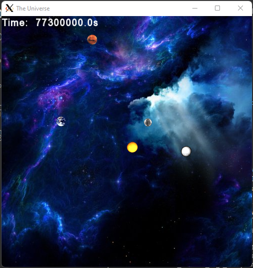
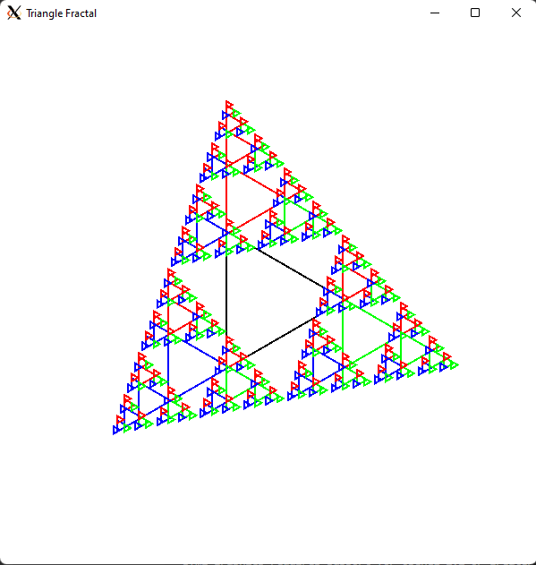
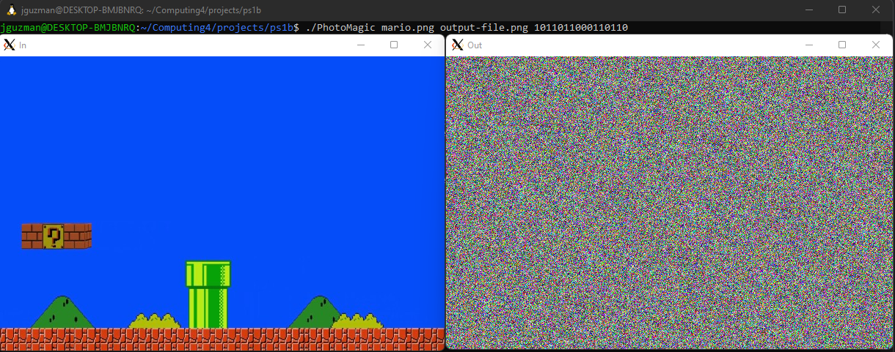
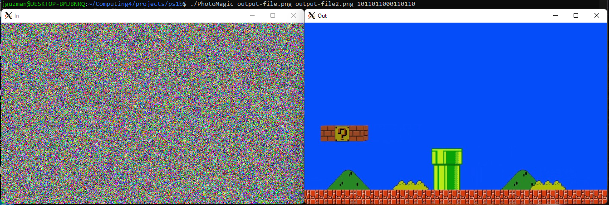

Solar System Simulator | C++, SFML, VS Code, Linux CLI
- Implemented Newton’s Laws of Motion to create
a precise simulation of the planets orbiting
the sun
- Incorporates several data structures and algorithms
such as vectors, smart pointers, and Object-oriented
programming using inheritance
- User Input controls the total time of simulation

See Project Code
Triangle Fractal Graphics | C++, SFML, Cpplint, VS Code, Linux CLI
- Created a Sierpinski
triangle graphically in C++ using the SFML library
- Constructed a Triangle Class Derived from parent
class from sf::Drawable
- Implemented a recursive solution to draw the triangle
- Utilized Cpplint tool to ensure consistent coding style

See Project Code
Image Encryption | C++, SFML, Boost/test, VS Code, Linux CLI
- Program that encrypts an image file using a 16-bit seed
- Image file can only be decrypted with original input bits
- Produces pseudo-random bits by simulating a linear feedback shift register
- Tested LFSR using the Boost unit testing framework


See Project Code